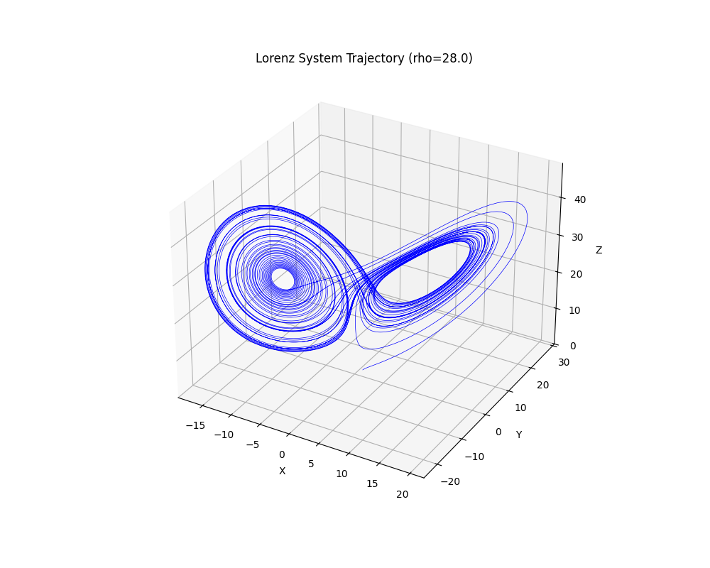
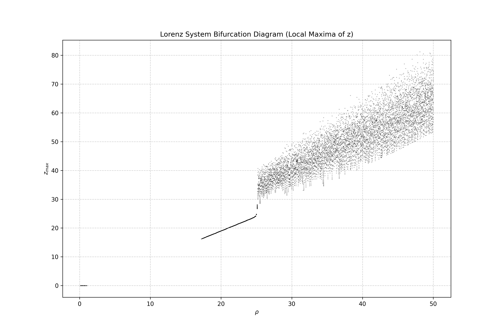
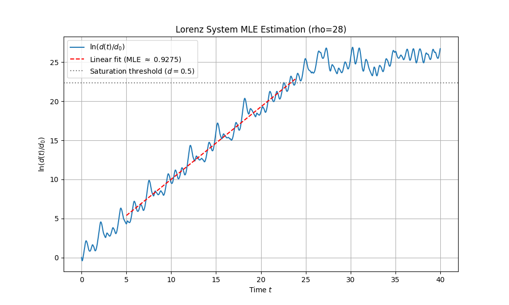
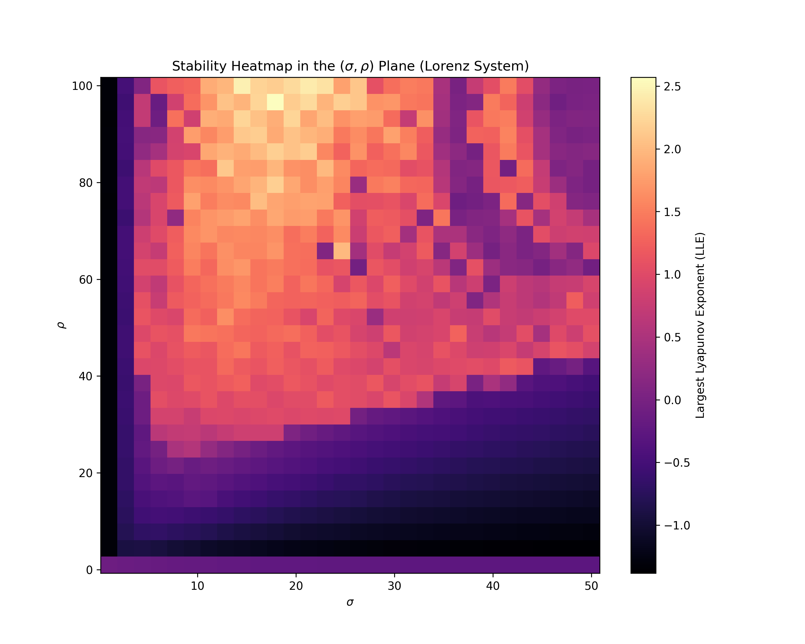
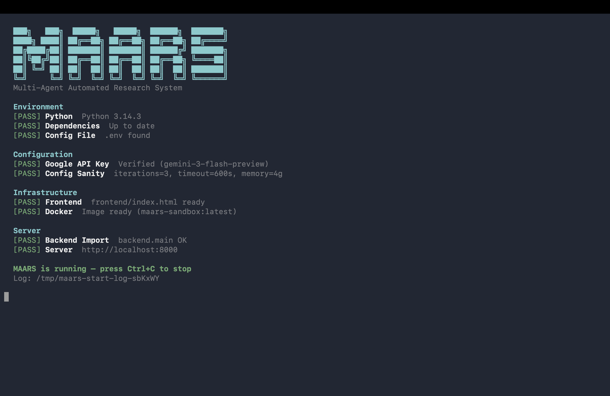
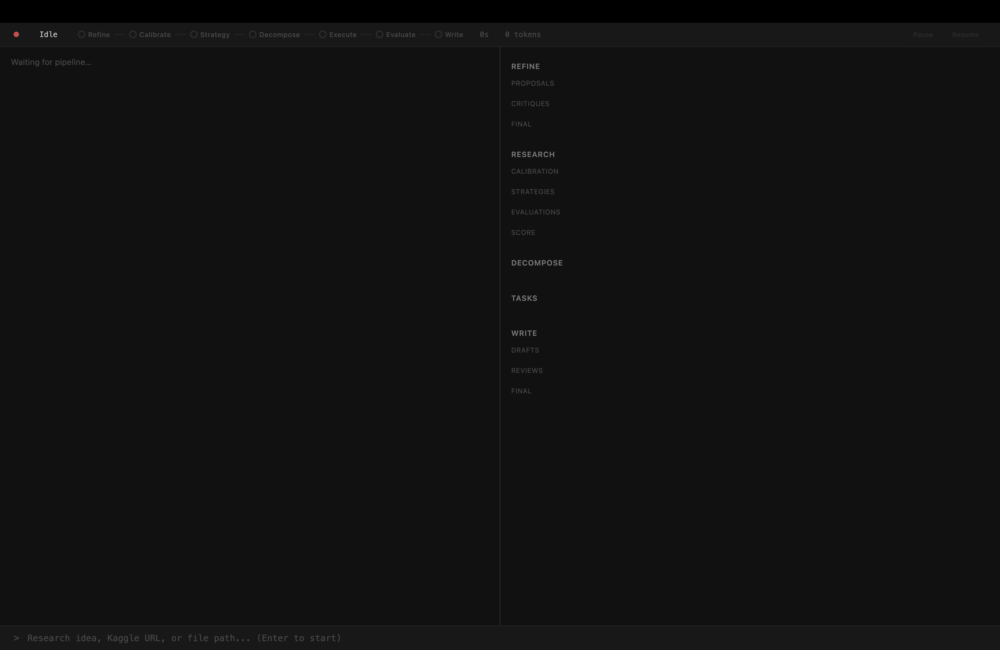

From a research idea
to a polished paper.
MAARS is a multi-agent system that takes a vague idea — or a Kaggle competition URL — and autonomously runs the full research loop: literature survey, task decomposition, sandboxed experiments, paper drafting, and peer review.
Ideas are cheap.
The paper is the hard part.
Between a one-sentence idea and a finished research artifact lies a long tail of dirty work: scoping, literature surveys, experiment design, reproducible code, error recovery, writing, revising. MAARS puts an agent-orchestrated loop around that tail — and runs it end to end.
Four stages.
One coherent loop.
Each stage has a stable I/O boundary: a runtime orchestrates control flow and persistence, while agents do the open-ended work.
Explorer drafts a proposal from the user's raw idea. Critic reviews it within a declared scope, surfacing gaps and ambiguities. They iterate until zero issues remain.
The core engine. A strategy decomposes the proposal into atomic tasks, which execute in Docker sandboxes with parallel scheduling. Outputs are verified, then evaluated — loops with strategy updates when gaps exist.
Writer reads all research outputs and drafts a complete paper. Reviewer critiques and drives revisions — same IterationState pattern as Refine.
A single-pass LLM refinement for prose quality, plus a deterministic metadata appendix (tokens, timings, scores). Ready to read.
if · for · while, scheduling, retries, termination → runtime. Search, coding, reasoning → agent.
Primary drafts → Reviewer returns {issues, resolved, pass} → Primary revises. Loops until pass=true or the iteration cap.
State lives on disk — JSON + Markdown under results/{session}/. SSE is notification only; the UI reads canonical data from the session DB.
Five layers.
One clear boundary.
Every run is a directory.
State is just files. No hidden database, no vector store. You can cd into any session and read exactly what each agent said — drafts, critiques, plan trees, execution logs, polished paper. Reproducible by construction.
results/{session}/
├── idea.md # user input
├── refined_idea.md # Refine output
├── proposals/ critiques/ # Refine rounds
├── calibration.md # Research calibration
├── strategy/ plan_tree.json # Research plan
├── tasks/ artifacts/ # code · figures · data
├── evaluations/ # Research rounds
├── drafts/ reviews/ # Write rounds
├── paper.md # Write output
├── paper_polished.md # Polish output
├── meta.json log.jsonl # metadata · SSE log
└── reproduce/ # Dockerfile · run.sh
Boring where it counts.
Interesting where it matters.
Runtime, API server, SSE broadcast, session DB.
Multi-agent framework; per-stage model override; native Google Search.
Isolated Python exec with CPU/RAM/GPU quotas, network toggle, timeouts.
Streaming log viewer + right-panel state dashboard reading from DB.
Literature survey, web search, competition data, paper parsing — wired into agents.
JSON & Markdown on disk. No cloud, no migrations. grep-friendly.
Every session emits a reproduce bundle — rerun any experiment from scratch.
Real runs.
Real papers.
Two end-to-end runs from the repo's showcase/ folder — each one producing code, figures, a polished paper, and a reproduce bundle.
Lorenz attractor — 4 figures that tell the chaos story
Input: "Solve the Lorenz system with scipy.integrate.solve_ivp (RK45). Produce 4 figures: 3D trajectory, bifurcation diagram, divergence curve, (σ,ρ) Lyapunov heatmap." Output: a full paper with derivations, code, and the plots below.




Does legitimate transfer learning weaken backdoor watermarks?
A constrained, time-boxed empirical run: CIFAR-10 → CIFAR-100 with a BadNets-style trigger on ResNet-18. MAARS decomposes the proposal, trains the poisoned source model, fine-tunes under two policies (Head-only vs Full FT), and produces the comparative figures, tables, and analysis that land in the paper.
Recursive decomposition into atomic, dependency-ordered tasks — executed in parallel when the DAG allows.
Poisoned .pth checkpoints, metrics JSON, per-round analysis reports, plots.
Headline claim, quantitative table, Head-only vs Full FT comparison, limitations — all LLM-written, all grounded in the artifacts.
A window into the loop.
The left panel streams what every agent is thinking. The right panel is a live dashboard that reads canonical state from the session DB — proposals, plan trees, drafts, reviews.


# clone & run
git clone https://github.com/dozybot001/MAARS.git
cd MAARS
bash start.shOn first boot start.sh creates a venv, installs deps, scaffolds .env from the example, builds the sandbox image, and serves on localhost:8000. GPU is auto-detected.
Drop in an idea ›
Paste a research idea, a path to a UTF-8 text/markdown file, or a Kaggle competition URL. Kaggle mode auto-extracts the competition ID, downloads data, and skips Refine.
Tune per stage ›
Set MAARS_REFINE_MODEL, MAARS_RESEARCH_MODEL, etc. to override the default Gemini model per stage.
GPU passthrough ›
Install the NVIDIA Container Toolkit, set MAARS_DOCKER_SANDBOX_GPU=true, and the sandbox gets --gpus all for PyTorch training.
Go deeper.
Five layers, SSE protocol, storage layout, stage inheritance.
How Primary ↔ Reviewer loops converge to zero issues.
Recursive decomposition, parallel DAG, strategy update loop.
Bring an idea.
Walk away with a paper.
MAARS is MIT-licensed, self-hostable, and reproducible by construction. Fork it, run it, break it.